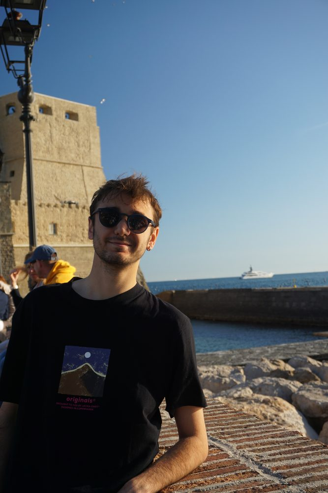

GÖKBAĞ
Software for an autonomous military support drone: it tracks objects and identifies friend or foe in real time.
I'm an AI engineer finishing my M.Sc. at the University of Passau. I build systems that see: drone vision that tracks targets in real time, models that score credit risk, and a photo engine that runs entirely on your device.
Move your cursor around. The detector labels whatever it sees.Scroll down. The detector locks onto whatever is in the middle of your screen.

Five systems I've built, from perception models to software that real businesses run on. Open one to see how it works.
Software for an autonomous military support drone: it tracks objects and identifies friend or foe in real time.
A machine learning model that reads customer data and predicts loan default risk for banks.
A photo processing and framing engine that runs entirely on your device, as a web app and on Android.
Inventory, invoicing and sales margin tools running two international businesses, with WhatsApp and email notifications.
The Turkish card game Pişti as a multiplayer Unity game, backed by a .NET 7 REST API.
Computer engineer by training, AI engineer by choice. Real clients since 2024, an AI master's in progress.
Deep learning, computer vision, autonomous neural architectures and edge deployment.
Production Oracle APEX systems, automated inventory margins, WhatsApp API notifications and mission-critical database work.
Data structures, algorithms, operating systems, database systems and network architecture.
Mobile game engines, educational network backends and hardware-interfacing code.
What I reach for, from training a detector to shipping the app around it.
Thirteen years of ice hockey and a lot of time underwater shaped how I work under pressure. Photography is why I started building Minimalframe.
Over a decade of high-speed, full-contact team hockey taught me real-time awareness, quick decisions under physical pressure, and accountability to a team.
Breath-hold diving demands physiological control, calm under hypoxic stress and sharp focus. Underwater, patience and calculated risk aren't optional.
Hiring for AI or ML engineering, starting a research collaboration, or building something that needs to see? Send me a line.
eren.alsan@outlook.com